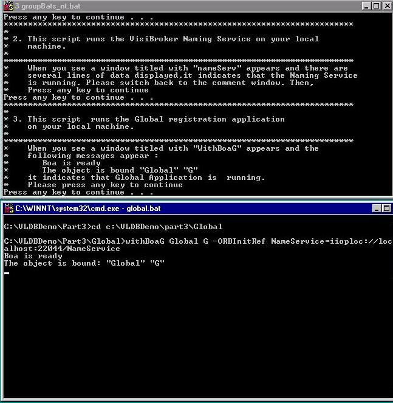

First, we start the necessary CORBA services to facilitate
our system. We then register the global site in the CORBA Naming Service,
as illustrated in the following screenshot. The upper window shows the
running script. The lower window shows the result of registering the global
site.
|
|
Previous | Next |
